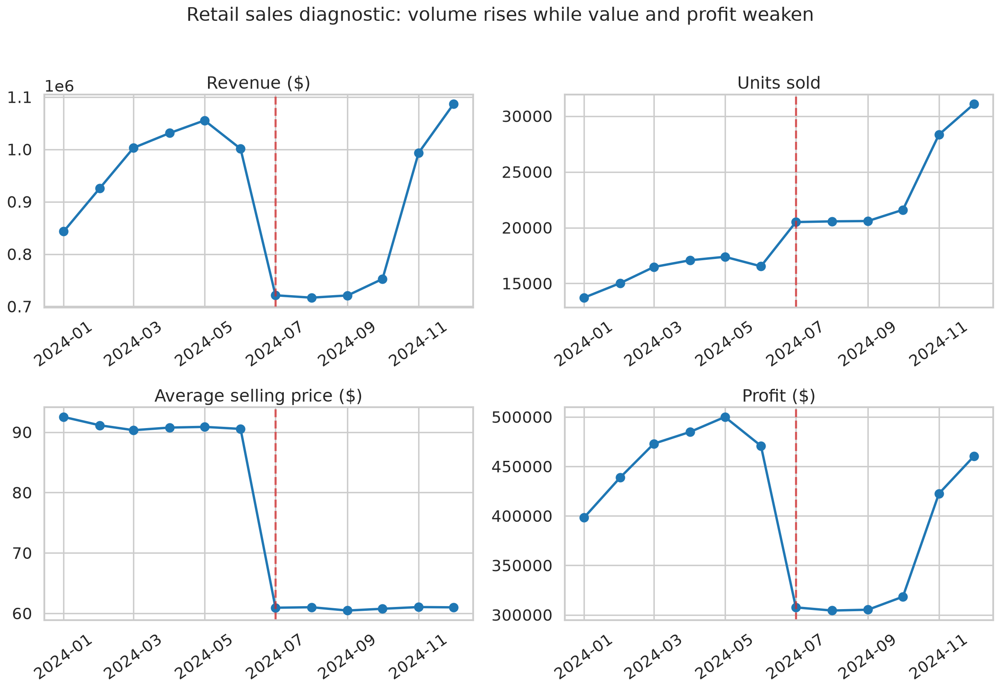
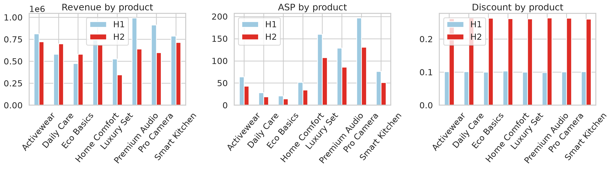
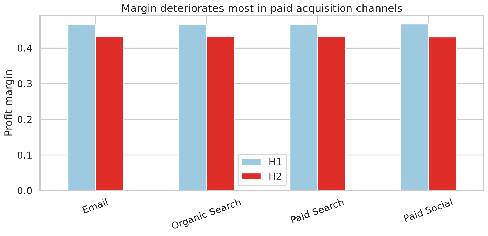

Business Question → Data → Investigation → Evidence → Diagnosis → Decision
Volume rose, but value per unit fell. Higher discounting and a shift toward lower-value products weakened revenue, profit, and margin. Paid channels underperformed on margin, while regional and segment results were heterogeneous.


